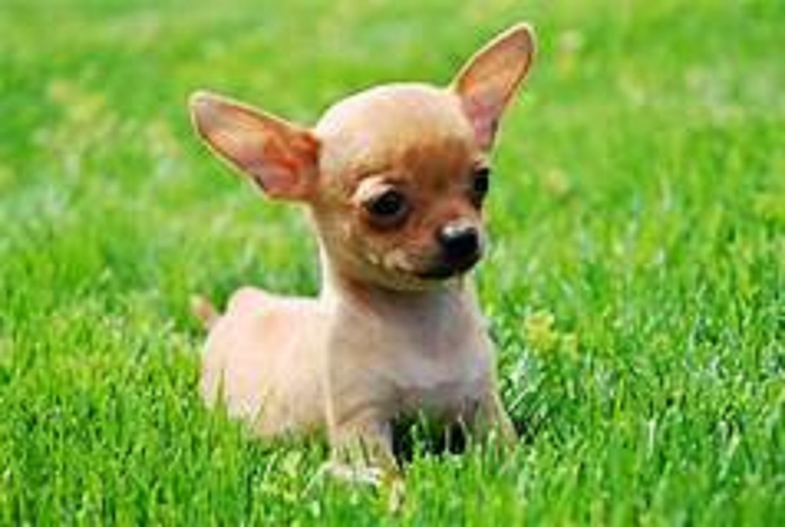
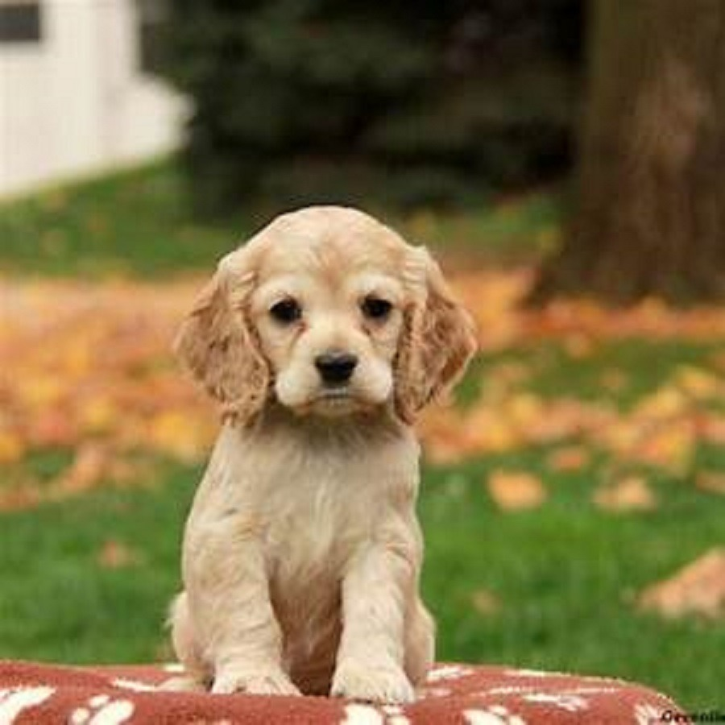

PERROS PERDIDOS EN TIJUANA
Nuestro objetivo en esta pagina es poder ayudar a los ciudadanos de Tijuana a encontrar a su mascota extraviada mediante las publicaciones que tenemos.
¿Cómo funciona?
Si esta buscando a su cachorro puede publicar su informacion para que llegue a más personas y así si alguien sabe algo pueda comunicarse con usted y permitirle recuperar a su perro.
Chihuahua cabeza de manzana perdido
Se extravió a los alrededores de villa del sol el dia 20 de junio del presente año.
Bulldog cafe perdido
Se perdió en villa fontana cerca de la prepararoria politecnico de Baja California.
Cachorro cocker encontrado
Estaba por la parte trasera de la plaza paseo 2000 frente a Carl's junior.

×